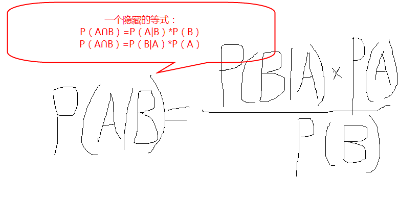
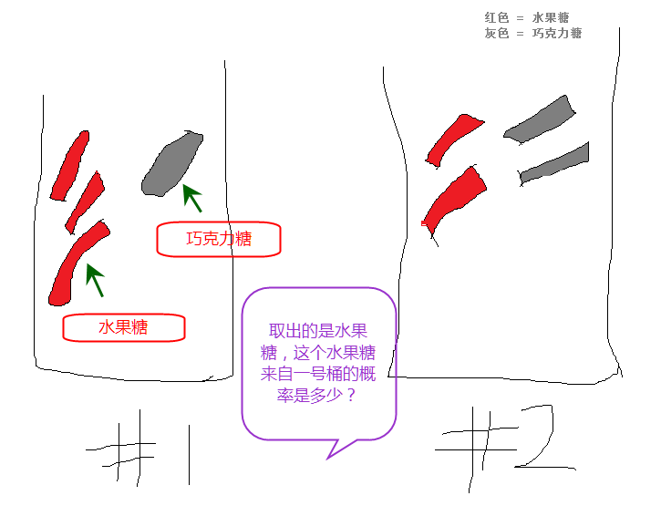
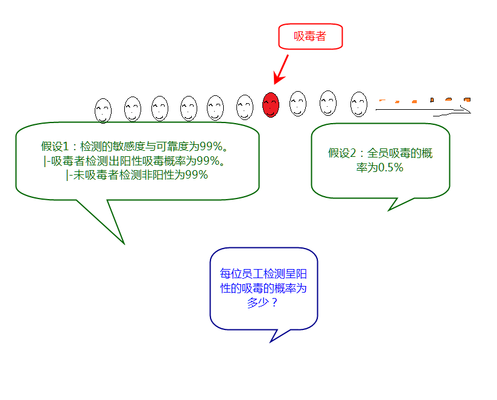
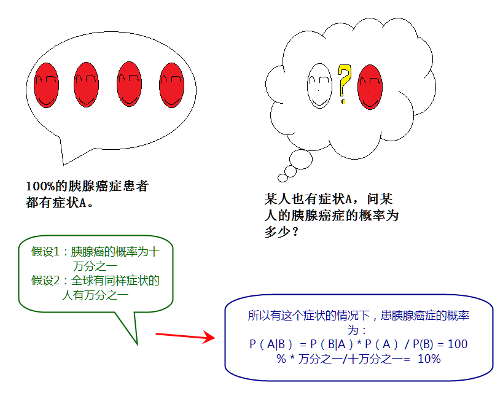
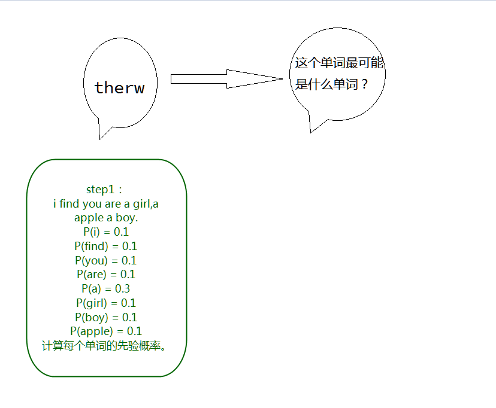
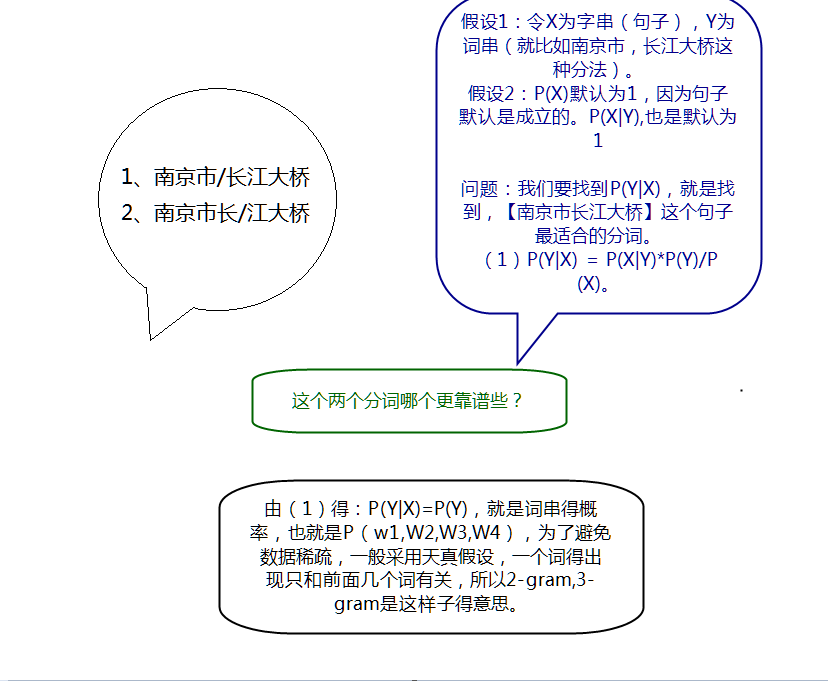
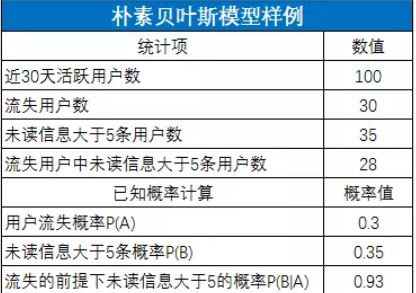
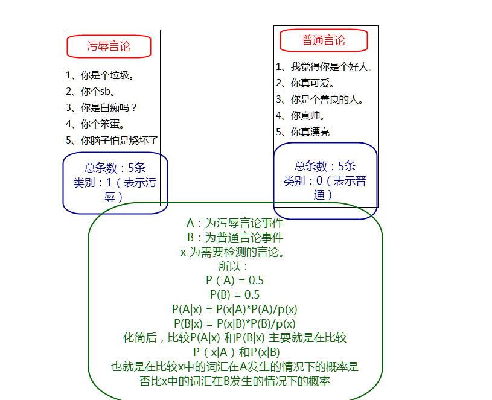
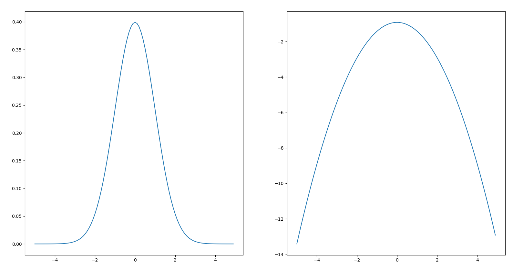
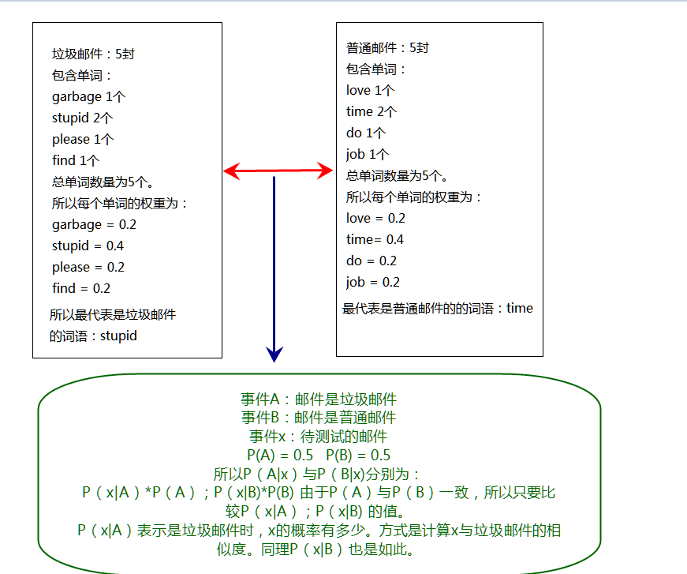

名词解析：
表述为：
通常把 称作标准相似度
条件概率定则：
结合方程（1）和方程（2） 得到:
对方程（3）同时除以 ,若 非0，可以得到贝叶斯定理：
解释： 事件A在事件B发生的条件下的概率 = 事件A与事件B同时发生的概率 / 事件B发生的概率
如图： 假设：两个一模一样的碗，一号碗有30颗水果糖和10颗巧克力糖，二号碗有水果糖和巧克力糖各20颗。
问题：现在随机选择一个碗，从中摸出一颗糖，发现是水果糖。请问这颗水果糖来自一号碗的概率有多大？
分析： 表示选择1号碗和选择2号碗的概率分别为0.5。E表示水果糖，所以问题转换成，P(H_1|E)在发现是水果糖的情况下，是从1号碗里获取的概率。
由方程（4）得：
由附录[1]全概率公式得：
得：0.75 * 0.5 + 0.5 * 0.5 =0.625 所以
所以获取的水果球是在1号碗中获取的概率为0.6，说明是正反馈。取出水果糖之后，H1事件的可能性得到了增强。
 分析：
同理检测是非阳性的非吸毒者的概率为：
结论： 即使检测率为99%,但是贝叶斯告诉我们，检测呈阳性，只有33%的概率是吸毒的，不吸毒的概率更大。假阳性高，则检测结果不可靠。
 基于贝叶斯定理：即使100%的胰腺癌症患者都有某症状，而某人有同样的症状，绝对不代表该人有100%的概率得胰腺癌，还需要考虑先验概率，假设胰腺癌的发病率是十万分之一，而全球有同样症状的人有万分之一，则此人得胰腺癌的概率只有十分之一，90%的可能是是假阳性。
 经典著作《人工智能：现代方法》的作者之一 Peter Norvig 曾经写过一篇介绍如何写一个拼写检查/纠正器的文章。
问题：是我们看到用户输入了一个不在字典中的单词，我们需要去猜测：“这个家伙到底真正想输入的单词是什么呢？” 由朴素贝叶斯定定理:
所以计算公式：
 如何找到一个句子最好得分词，需要有天真得假设，一个词语得出现只和前后几个词语有关。

由图中计算未读信息大于5的流失的概率为 ，由朴素贝模型得：
实情况并不会像这个例子这么理想化,现实情况中，你可能要找上一堆觉得能够凸显用户流失的行为，然后一一做贝叶斯规则，来测算他们是否能显著识别用户流失。这取决于你对业务的理解程度和直觉的敏锐性。另外，你还需要定义“流失”和“活跃”，还需要定义贝叶斯规则计算的基础样本，这决定了结果的精度。
为了肃清电商平台的恶性商店。
由附录[1]全概率公式得：
所以
被M1模型判别为恶性商户，说明这家商户做出恶性行为的概率是一般商户的11倍，那么，就非常有必要用进一步的手段进行检查了。
朴素贝叶斯的理念非常朴素，就是假设所有的特征属性都是独立的，挑选出概率最大的类别，就是最后的结果。 简单的推导思路：
 采用伯努利朴素贝叶斯模型，在代码中就是词集模型，只检查特征是否出现，不计算特征出现的次数。核心就是：
在利用python实现时，需要注意几个问题：
- 分子为0的情况导致的结果为0，设置初始分子为1，初始分母为2
- 下溢出问题，由于python对非常小的数进行相乘可能或得到不正确的数值，所以采用自然对数函数ln，利用函数的最大值是一致。 
 采用词袋模型，不止看特征是否出现，同时特征出现的数量也会被统计。 核心：
在利用Python实现时，需要注意以下几个问题：
- 切分文本时，由于只考虑词语，所以不需要考虑是否是大小写，所以统一转换为小写字符，并且由于英文字符有空字符，所以要去除掉空字符
- 为了更好的测试分类的正确性，采用了交叉留存验证，假设有50封垃圾邮件，50封普通邮件，我们随机用30封普通邮件和30封垃圾邮件进行训练分类，其余的邮件用来测试，反复测试，获得一个平均的算法的错误率。
由于这个分类和垃圾邮件分类非常相似，除了在数据来源和以下方面有一些区别：
- 数据来源与rss上
- 由于rss源数据上，有许多的高频词是无意义的，去除一定的高频词对算法是有所帮助的。
- 同时发现高频词语基本都是一些停用词语，就是一些人统计出来的无意义的高频词语，对原始数据剔除相关的词语，会对算法带来一定的提交
伪代码：
get data from qqmessage calc full text list F_T,doc text list D_T,class text list C_T create a vocab list V_L from D_T remove V_L's stopwords random select some train_set,other test_set for i in train_set: train_matrix class_list add calc p0_vector,p1_vector,pa_insult from train_matrix,class_list for j in test_set: if != : errornum += 1 print("the error rate is {0}")
| 类别 | 实例 | 问题简述 | tips |
| 贝叶斯 | |||
| 水果糖例子 | 摸出一颗水果糖，来自一号碗的概率多少？ | 概率大于0.5，说明是正反馈。 | |
| 吸毒者检测 | 检测是阳性的员工是吸毒者的概率是多少？ | 假阳性高，泽检测结果不可靠。 | |
| 胰腺癌检测 | 在某种症状的情况下，患胰腺癌症的概率为? | 即使患病的人100%都有这个症状，也不能证明某人有这个症状就得病了。 | |
| 拼写纠正 | 一个错误的单词最可能是什么单词？ | 计算错误的单词是所有可能的单词的概率最高的那个。 | |
| 中文分词 | 南京市长江大桥该分成什么样子的分词？ | 天真的假设，一个词语得出现只和前后几个词语有关。 | |
| 是否挽留玩家 | 未读消息大于5的玩家流失的概率为? | 如何找到凸显特征的行为，并定义行为的类别很重要。 | |
| 恶性商店检测 | 被模型判定为恶性商户的概率为？ | 需要与先验概率比较，如果远远大于先验概率，那么就需要引起足够的注意。 | |
| 朴素贝叶斯 | |||
| 筛选论坛侮辱言论 | 一个评论是否是侮辱言论？ | 相似度越高的类别，就是归属的类别。 | |
| 垃圾邮箱分类 | 一封邮件是否是垃圾邮件？ | 使用交叉留存验证分类的错误率 | |
| Rss源的分类 | 一个Rss内容是属于哪个Rss源？ | 去除高频词语，和停用词可以降低分类的错误率 | |
| QQ信息的识别 | 一个QQ消息是属于哪个人的？ | 中文分词和中文的停用词，适当的添加的自己停用词可以降低分类的错误率 |
| 步骤 | 方法 |
|---|---|
| 收集数据 | 可以使用任意方法 |
| 准备数据 | 数值型或者布尔型 |
| 分析数据 | 有大量特征时，画直方图更明显 |
| 训练算法 | 计算不同的独立特征的条件概率 |
| 测试算法 | 使用交叉留存验证算法的错误率 |
| 使用算法 | 文档分类，可以在任意的场景使用 |
| 必须条件 | 原因 |
|---|---|
| 已知类别的先验概率P(y_1,…y_n)可计算 | 只有知道已知类别的先验概率P(y_1,…y_n)才可以计算P(y_1,…,y_n)的后验概率，P(y_1 |
| 当需求出具体概率时，需要知道p(x)的先验概率 | 这样才能求出两个事件的标准相似度 |
| 当x和y都有无数特征时，特征之间必须要独立，是不相关的 | 否则将计算量非常大 |
| 可能运用的场景 | 原因 |
|---|---|
| 文档分类 | 类似垃圾邮件，侮辱言论，Rss分类，qqmessage都算 |
| 概率预测 | 类似吸毒者检测，胰腺癌检测，水果糖例子，恶性商店检测，是否挽留玩家 |
| 文本分词有纠正 | 中文分词，拼写纠正等。 |
| 歌曲推荐 | 可以先通过KNN算法推荐出100首歌曲，然后再经过朴素贝叶斯，根据用户原有的习惯特征，筛选出10首或者20首的歌曲作为每日推荐。 |
| 行程自动安排 | 有那么一款App，自动导航到一个商场时，自动根据玩家的先验概率，计算并判断出玩家可能去哪里，然后筛选出多个地点供玩家选择。 |
| 代码智能补全 | 玩家输入的代码，自动检查玩家可能输入的字符是什么，然后在库中寻找，概率最高的，然后再显示出来，比如先读取所有的代码库中，求出先验概率，然后根据输入预测玩家可能要输入什么，然后做出提示，然后用户可自行输出相应的文字。 |
| 购物推荐 | 和生活相关的，比如玩家买了电磁炉，很有可能就要买锅什么的。关联购买的，这个放到关联分析那部分去做。 |
由方程（1）可得：
所以：
带入条件概率公式：
含义： 如果A和A’构成样本空间的一个划分，那么事件B的概率，就等于A和A’的概率分别乘以B对这两个事件的条件概率之和。